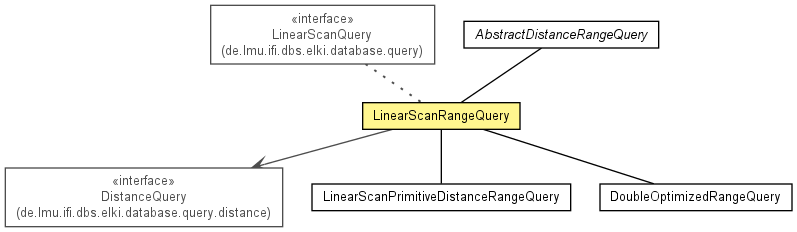

de.lmu.ifi.dbs.elki.database.query.range
Class LinearScanRangeQuery<O,D extends Distance<D>>
java.lang.Object
 de.lmu.ifi.dbs.elki.database.query.AbstractDataBasedQuery<O>
de.lmu.ifi.dbs.elki.database.query.range.AbstractDistanceRangeQuery<O,D>
de.lmu.ifi.dbs.elki.database.query.range.LinearScanRangeQuery<O,D>
de.lmu.ifi.dbs.elki.database.query.AbstractDataBasedQuery<O>
de.lmu.ifi.dbs.elki.database.query.range.AbstractDistanceRangeQuery<O,D>
de.lmu.ifi.dbs.elki.database.query.range.LinearScanRangeQuery<O,D>
- Type Parameters:
O - Database object typeD - Distance type
- All Implemented Interfaces:
- DatabaseQuery, LinearScanQuery, RangeQuery<O,D>
- Direct Known Subclasses:
- LinearScanPrimitiveDistanceRangeQuery, LinearScanRawDoubleDistanceRangeQuery
public class LinearScanRangeQuery<O,D extends Distance<D>>
- extends AbstractDistanceRangeQuery<O,D>
- implements LinearScanQuery

Default linear scan range query class.
| Methods inherited from class java.lang.Object |
clone, equals, finalize, getClass, hashCode, notify, notifyAll, toString, wait, wait, wait |
LinearScanRangeQuery
public LinearScanRangeQuery(DistanceQuery<O,D> distanceQuery)
- Constructor.
- Parameters:
distanceQuery - Distance function to use
getRangeForDBID
public List<DistanceResultPair<D>> getRangeForDBID(DBID id,
D range)
- Description copied from interface:
RangeQuery
- Get the nearest neighbors for a particular id in a given query range
- Specified by:
getRangeForDBID in interface RangeQuery<O,D extends Distance<D>>- Specified by:
getRangeForDBID in class AbstractDistanceRangeQuery<O,D extends Distance<D>>
- Parameters:
id - query object IDrange - Query range
- Returns:
- neighbors
getRangeForObject
public List<DistanceResultPair<D>> getRangeForObject(O obj,
D range)
- Description copied from interface:
RangeQuery
- Get the nearest neighbors for a particular object in a given query range
- Specified by:
getRangeForObject in interface RangeQuery<O,D extends Distance<D>>- Specified by:
getRangeForObject in class AbstractDistanceRangeQuery<O,D extends Distance<D>>
- Parameters:
obj - Query objectrange - Query range
- Returns:
- neighbors